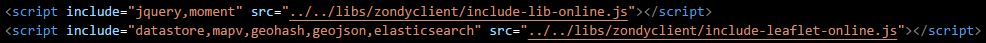

核心用法
“除了常规的引入include-lib-local.js脚本外，通过 设置属性include="jquery,bootstrap"的方式自动寻找引入对应的第三方脚本jquery,bootstrap”.
这里是引入常见的地图脚本leaflet以及对应的geojson,turf,elasticsearch插件
“除了常规的引入include-leaflet-local.js脚本外，通过 设置属性include="geojson,turf"的方式自动寻找引入对应的第三方脚本leaflet,geojson,turf”.
“include="geojson,turf"的里面的插件没有先后顺序，内部维护了其先后顺序”.
include-*.js中include="xxx"具体的名字类型geojson,turf,elasticsearc等可以在include-*.js内部的代码中查看
本地离线使用 include-xxx-local.js
离线版本的核心原理就是根据include=""中的名字，在 当前cdn文件夹下寻找对应的js的脚本并按照规定的顺序引入到浏览器中
“请把webclient安装包安装完成后的cdn的文件夹与include-*.js在同一目录下，然后只需正常的引入对应的include-*.js即可”.
“include-*.js 通过include="xxx"的方式自动寻找引入对应的第三方脚本”.

互联网在线使用 include-xxx-online.js
在线版本的核心原理就是根据include=""中的名字，在 互联网众多cdn网址下寻找对应的js的脚本并按照规定的顺序引入到浏览器中
“只需正常的引入对应的include-xxx-online.js即可”.
“include-*.js 通过include="xxx"的方式自动寻找引入对应的第三方脚本”.

局域网离线使用 include-xxx-online.js
局域网离线版本的核心原理就是根据include=""中的名字，在 对应设置的ip/socket的机器上寻找对应的js的脚本并按照规定的顺序引入到浏览器中

“请在某一台机器上设置对应的cdn后台服务器”. 假定该机器的ip是192.168.10.185
1. 进入对应目录.

2. 安装对应的依赖,这一步需要联网.

3. 开始执行,这一步不需要联网.

4. 结束。对应的机器ip是192.168.10.185，端口号是8800
5. 其他机器引入对应的脚本，需要和上面的机器同一网段. 请注意多出来的属性ip以及socket